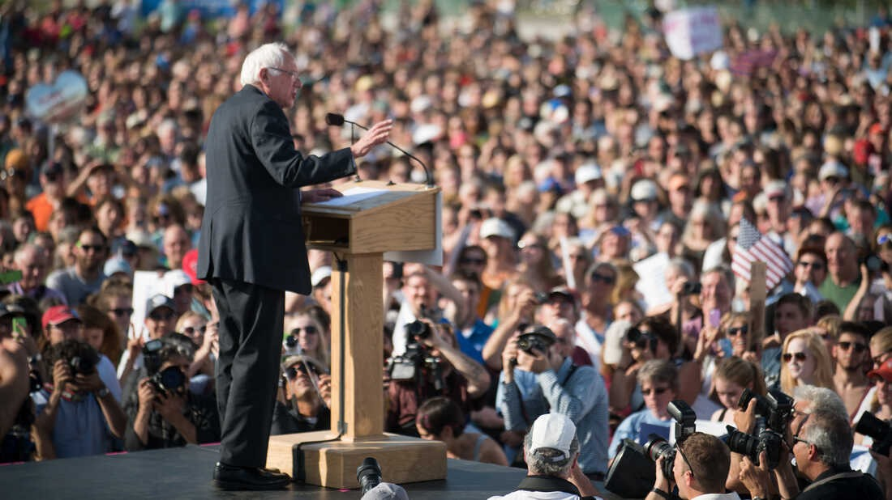

POLITICION
What is a politician?
A politician is a person who has political power in the government of a state, a person active in party politics, or a person holding or seeking an elected office in government.
How to become politician?
1. Understand the Political System in India
1. The democratic setup and the three-tier structure
In India, people choose their leaders through elections. The political system has three levels: central government, state governments, and local governments works.
2. Familiarize yourself with the Constitution of India
The Constitution of India is a special book that explains the basic rules and laws of the country.
3. Study the roles and functions of different political bodies
To navigate the political system successfully, it is crucial to understand what different political groups, like Parliament, Legislative Assemblies, and local governing bodies, do.
Develop a Strong Political Knowledge Base
1. Stay informed about current affairs, political issues, and policies
Stay updated by reading news, using the internet, and joining discussions to learn about the issues that affect society and the country.
2. Follow prominent politicians and political commentators
Follow well-known politicians and people who talk about politics By listening to their speeches, interviews, and social media posts, you will learn more about how politics operates and gain insights for your political journey.
2. Engage in Grassroots Politics
1. Join a political party of your choice
Find a political party that shares your values and beliefs.
2. Participate actively in local community activities
Get involved in local community work like volunteering, organizing events, or supporting community projects.
3. Attend public meetings, rallies, and protests
Go to public gatherings, political rallies, and peaceful protests to show your support for important causes.
4. Establish connections with local leaders and party members
Build relationships with local leaders and members of your political party. Networking within your party and community is essential for a strong political foundation.
3. Education and Qualifications
1. Finish your education, preferably with a degree in law, social sciences, or political science
Completing your education is important, and having a degree in law, social sciences, or political science can provide a strong base for a political career.
3. Gain practical experience through internships or volunteering with political organizations
Getting hands-on experience is valuable in politics. Look for internships or volunteer opportunities with political organizations to learn how politics works in practice. This allows you to understand the day-to-day operations, develop important skills, and build a network within the political domain.
Building a Strong Network
1. Attend political events, seminars, and conferences
Go to political gatherings, seminars, and conferences to meet people who are interested in politics like you..
3. Develop connections with influential individuals within and outside of politics
Build relationships with important people who have influence, both in politics and outside of it. Connect with leaders, activists, professionals, and community figures who can give you advice, support, and opportunities as you pursue your political goals.
4. Utilize social media platforms to network and engage with like-minded individuals
Make use of social media sites to connect with people who have similar interests as you. Join most relevant groups, take part in discussions, and engage with others. This way, you can expand your network, share your ideas, and build meaningful connections that can help you in your political journey.